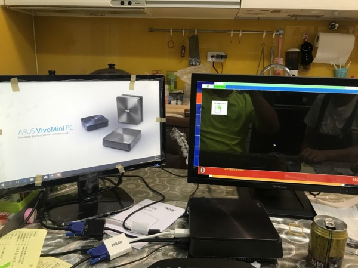
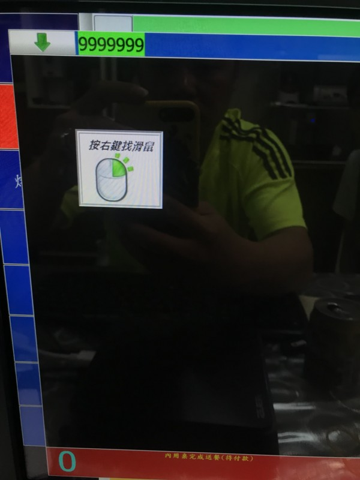

請問兩個觸控螢幕 另一個備餐螢幕已顯示但無法觸控
一個 VGA 轉接HDMI 螢幕 (ViewSonic 22 觸控電腦螢幕 )
一個 VGA 轉 VGA 轉 Display (Acer 19 觸控螢幕 但需要下載觸控程式)
(http://home.eeti.com.tw/drivers.html) (禾瑞亞科技)
我想 把 HDMI 當主螢幕 、然後把 Display 當2 但是出菜單那邊無法觸控
問題 1:是否因為 Acer 19 觸控螢幕須要另外下載觸控程式關係
而導致 Acer 19 觸控螢幕 變主螢幕、但是螢幕2--ViewSonic 22 觸控電腦螢幕(本來就有觸控) 出菜單也無法點任何選單
問題2: 是否兩台觸控螢幕 、只有主選單可以觸控 出菜單無法觸控
問題3: 假設都支援觸控、是否 我把ACER 也換過 ViewSonic 22 觸控電腦螢幕 就可以使用
問題4 : 我下載ACER 觸控驅動 變成(他當主螢幕) 、我有參考您給我的網址爬文、都設定延伸 把 ViewSonic 22 觸控電腦螢幕當主螢幕 、卻變成 點餐與出菜螢幕 都在 ViewSonic 22 觸控電腦螢幕 、然後出現點右鍵找滑鼠、都無法關閉、只能電腦關機
如果式觸控只支援 出菜單我就懂意思、 再麻煩您抽空幫我解答、盛不到四天要開幕了

